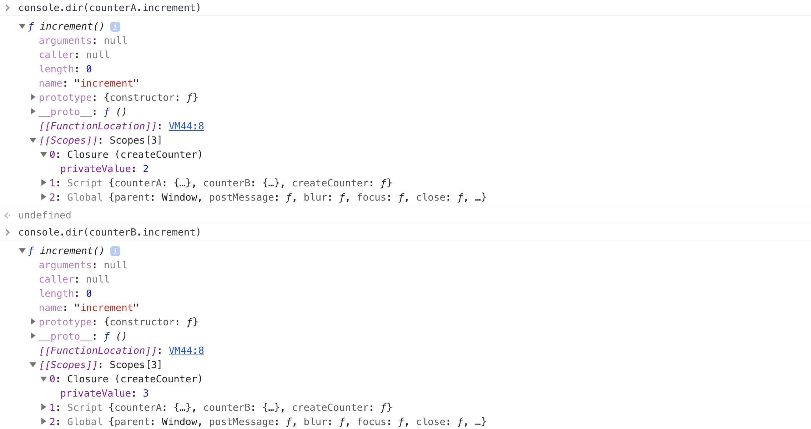
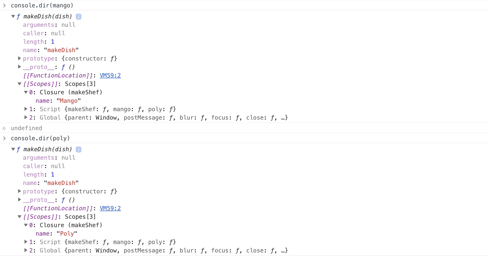

1. Замикання
Замикання (closure) - це зв'язок між функцією і її ланцюжком областей видимості.
Цей механізм можливий завдяки лексичному оточенню. При виконанні функції, її лексичне оточення отримує посилання на ту область видимості, де функція була оголошена (зовнішнє лексичне оточення), тим самим отримуючи доступ до змінних з неї, буквально утримуючи в пам'яті таблицю доступних змінних.
Разом, замикання це термін який описує здатність функції запам'ятовувати лексичне оточення в якому вона була оголошена, і продовжувати отримувати доступ до змінних з цього лексичного оточення незалежно від того де вона була викликана.
Розглянемо приклад функції-лічильника з недоступною із зовні змінної.
const createCounter = function () {
/*
* Локальна змінна privateValue доступна тільки в замиканні.
* Отримати до неї доступ в зовнішньому коді неможливо.
*/
let privateValue = 0;
const increment = function () {
privateValue += 1;
console.log(privateValue);
};
return {
increment,
};
};
const counterA = createCounter();
counterA.increment(); // 1
counterA.increment(); // 2
const counterB = createCounter();
counterB.increment(); // 1
counterB.increment(); // 2
counterB.increment(); // 3
У прикладі функція createCounter створює локальну змінну privateValue, а
також локальну функцію increment, яка збільшує значення privateValue і
виводить значення в консоль.
Функція increment не містить власної локальної змінної privateValue, але
завдяки механізму замикання їй доступна змінна з зовнішнього оточення функції
createCounter. В результаті вона може користуватися змінної PrivateValue,
створеної під час виклику функції createCounter, навіть після того, як
increment буде повернута з виклику createCounter.
Якщо заглянути всередину counterA і counterB використовуючи
console.dir (), наочно видно механізм замикання.

Напишемо функцію приготування кухарем нікого страви.
const makeDish = function (shefName, dish) {
console.log(`${shefName} is cooking ${dish}`);
};
makeDish('Mango', 'apple pie'); // Mango is cooking apple pie
makeDish('Mango', 'fish'); // Mango is cooking fish
makeDish('Mango', 'beef stew'); // Mango is cooking beef stew
makeDish('Poly', 'muffins'); // Poly is cooking muffins
makeDish('Poly', 'pork chops'); // Poly is cooking pork chops
makeDish('Poly', 'roast beef'); // Poly is cooking roast beef
Проблема такого підходу в тому, що при кожному виклику функції доводиться передавати ім'я кухаря який буде готувати страву. Розв'язати цю проблему можна використовуючи замикання. Пишемо функцію створення шефа з ім'ям, яка повертає іншу функцію для приготування страви.
const makeShef = function (name) {
/*
* Параметр name це локальна змінна для функції makeShef.
* Це означає що вона буде доступна функції makeDish через замикання.
*/
return function makeDish(dish) {
console.log(`${name} is cooking ${dish}`);
};
};
const mango = makeShef('Mango');
mango('apple pie'); // Mango is cooking apple pie
mango('beef stew'); // Mango is cooking beef stew
const poly = makeShef('Poly');
poly('pancakes'); // Poly is cooking pancakes
poly('eggs and bacon'); // Poly is cooking eggs and bacon
Подивимося в консоль.

2. Додаткові матеріали
Вичерпна стаття по замиканнях від Preethi Kasireddy , по посиланнях нижче, обов'язкова до прочитання у вільний від вивчення основного матеріалу час.